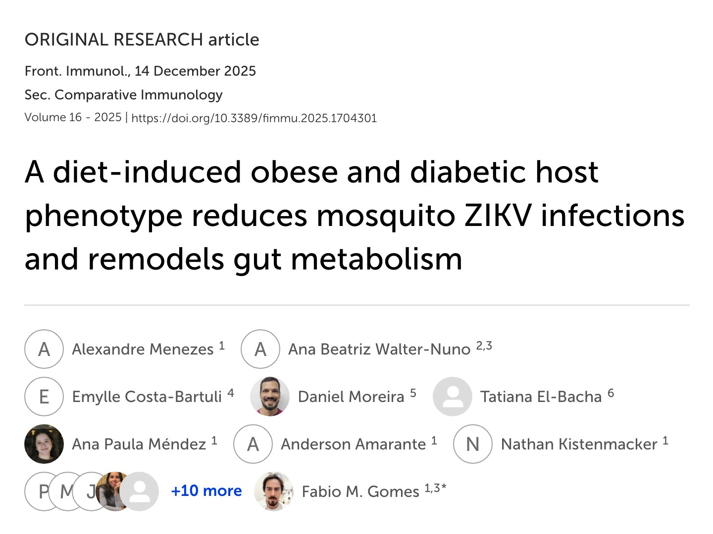

New publication · Frontiers in Immunology
Host obesity rewires mosquito gut metabolism and reduces ZIKV infection.
Our latest paper in Frontiers in Immunology shows that blood from diet-induced obese and diabetic mice remodels the Aedes aegypti midgut metabolic landscape and significantly lowers Zika virus infection rates — establishing a new immunometabolic axis at the heart of arbovirus transmission.